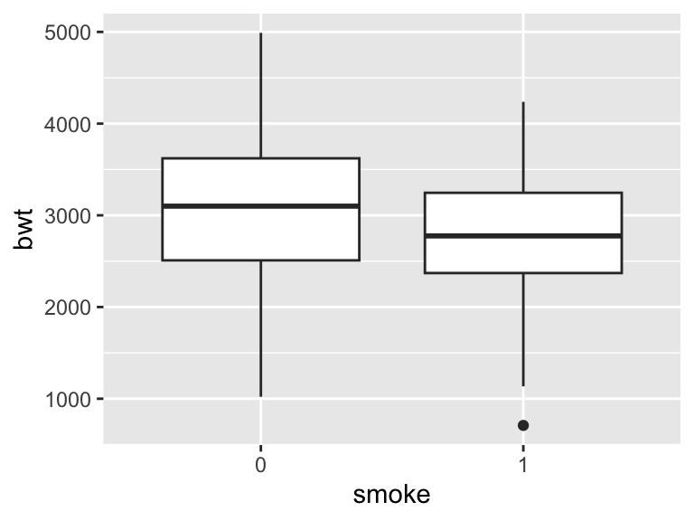
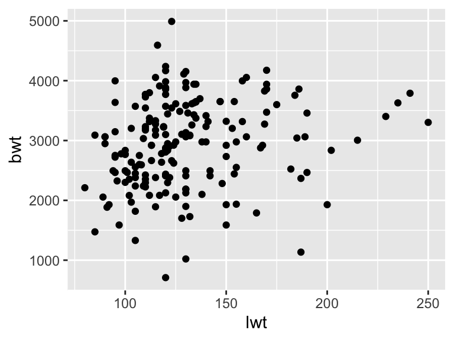
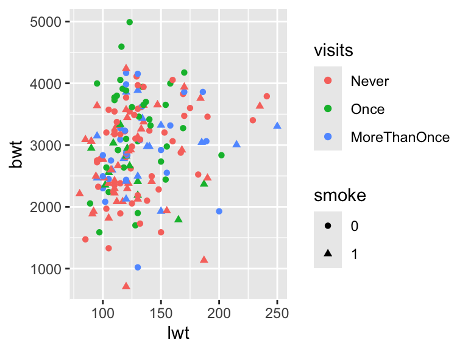

### Open help page for birthwt
?birthwt
### Make a tibble with the data
birthData <- as_tibble(birthwt)
birthData# A tibble: 189 × 10
low age lwt race smoke ptl ht ui ftv bwt
<int> <int> <int> <int> <int> <int> <int> <int> <int> <int>
1 0 19 182 2 0 0 0 1 0 2523
2 0 33 155 3 0 0 0 0 3 2551
3 0 20 105 1 1 0 0 0 1 2557
4 0 21 108 1 1 0 0 1 2 2594
5 0 18 107 1 1 0 0 1 0 2600
6 0 21 124 3 0 0 0 0 0 2622
7 0 22 118 1 0 0 0 0 1 2637
8 0 17 103 3 0 0 0 0 1 2637
9 0 29 123 1 1 0 0 0 1 2663
10 0 26 113 1 1 0 0 0 0 2665
# ℹ 179 more rows### Make smoke into a factor
# Check if `smoke` is numerical
is.numeric(birthData$smoke)[1] TRUE# Alternatively, review the summary of the whole dataset
summary(birthData) low age lwt race
Min. :0.0000 Min. :14.00 Min. : 80.0 Min. :1.000
1st Qu.:0.0000 1st Qu.:19.00 1st Qu.:110.0 1st Qu.:1.000
Median :0.0000 Median :23.00 Median :121.0 Median :1.000
Mean :0.3122 Mean :23.24 Mean :129.8 Mean :1.847
3rd Qu.:1.0000 3rd Qu.:26.00 3rd Qu.:140.0 3rd Qu.:3.000
Max. :1.0000 Max. :45.00 Max. :250.0 Max. :3.000
smoke ptl ht ui
Min. :0.0000 Min. :0.0000 Min. :0.00000 Min. :0.0000
1st Qu.:0.0000 1st Qu.:0.0000 1st Qu.:0.00000 1st Qu.:0.0000
Median :0.0000 Median :0.0000 Median :0.00000 Median :0.0000
Mean :0.3915 Mean :0.1958 Mean :0.06349 Mean :0.1481
3rd Qu.:1.0000 3rd Qu.:0.0000 3rd Qu.:0.00000 3rd Qu.:0.0000
Max. :1.0000 Max. :3.0000 Max. :1.00000 Max. :1.0000
ftv bwt
Min. :0.0000 Min. : 709
1st Qu.:0.0000 1st Qu.:2414
Median :0.0000 Median :2977
Mean :0.7937 Mean :2945
3rd Qu.:1.0000 3rd Qu.:3487
Max. :6.0000 Max. :4990 # Finally, make smoke into a factor
birthData <- mutate(birthData, smoke = factor(smoke))
# Check the ftv variable, make it a factor and collapse some of the levels
table(birthData$ftv)
0 1 2 3 4 6
100 47 30 7 4 1 birthData <- mutate(birthData, ftvFac = factor(ftv))
birthData <- mutate(birthData, visits = fct_collapse(ftvFac, Never="0", Once="1", other_level="MoreThanOnce"))
summary(birthData) low age lwt race smoke
Min. :0.0000 Min. :14.00 Min. : 80.0 Min. :1.000 0:115
1st Qu.:0.0000 1st Qu.:19.00 1st Qu.:110.0 1st Qu.:1.000 1: 74
Median :0.0000 Median :23.00 Median :121.0 Median :1.000
Mean :0.3122 Mean :23.24 Mean :129.8 Mean :1.847
3rd Qu.:1.0000 3rd Qu.:26.00 3rd Qu.:140.0 3rd Qu.:3.000
Max. :1.0000 Max. :45.00 Max. :250.0 Max. :3.000
ptl ht ui ftv
Min. :0.0000 Min. :0.00000 Min. :0.0000 Min. :0.0000
1st Qu.:0.0000 1st Qu.:0.00000 1st Qu.:0.0000 1st Qu.:0.0000
Median :0.0000 Median :0.00000 Median :0.0000 Median :0.0000
Mean :0.1958 Mean :0.06349 Mean :0.1481 Mean :0.7937
3rd Qu.:0.0000 3rd Qu.:0.00000 3rd Qu.:0.0000 3rd Qu.:1.0000
Max. :3.0000 Max. :1.00000 Max. :1.0000 Max. :6.0000
bwt ftvFac visits
Min. : 709 0:100 Never :100
1st Qu.:2414 1: 47 Once : 47
Median :2977 2: 30 MoreThanOnce: 42
Mean :2945 3: 7
3rd Qu.:3487 4: 4
Max. :4990 6: 1 ### Parallell boxplots
ggplot(birthData, aes(x=visits, y=bwt)) + geom_boxplot() 
ggplot(birthData, aes(x=smoke, y=bwt)) + geom_boxplot() 
# Groupwise boxplots
ggplot(birthData, aes(x=smoke:visits, y=bwt, col=smoke)) + geom_boxplot() 
### Scatterplot
ggplot(birthData, aes(x=lwt, y=bwt)) + geom_point() 
### Scatter plot with points coloured after visits, and point types after smoke status
ggplot(birthData, aes(x=lwt, y=bwt, col=visits)) + geom_point() 
ggplot(birthData, aes(x=lwt, y=bwt, col=visits, pch=smoke)) + geom_point() 